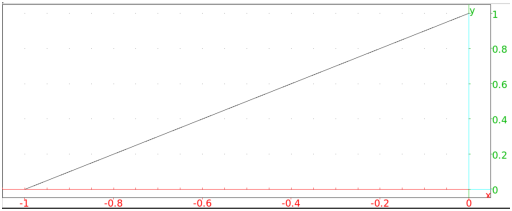
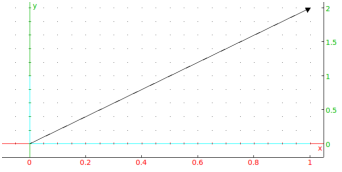
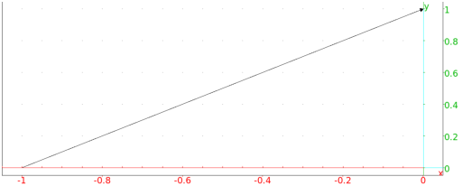

13.7.4 Vectors in the plane: segment vector
See Section 14.5.4 for vectors in space.
The segment commands returns and draws
vectors. (The segment command can also draw line segments,
see section 13.7.3.)
-
segment takes two arguments:
- segment(p,v) returns the corresponding vector and
draws it as a line segment from p to p+v.
Example
Input:
segment([-1,0],[1,1])
Output:

The vector command also makes vectors, with a different
syntax. It can take its arguments in different ways.
The coordinates of the vector.
-
vector takes one argument:
L, a list of the coordinates of the vector.
- vector(L) returns and draws the vector with the
given coordinates, starting from the origin.
Example
Input:
vector([1,2])
Output:

Two points or a point and a vector.
-
vector takes two arguments:
-
P, a point.
- Q, a point or a vector. If Q is a point, it can
be combined with P in a list.
- vector(P,Q) returns and draws the
corresponding vector. If the arguments are two points, the vector
goes from P to Q. If the arguments are a point and a
vector, then the vector starts at P.
Example
Input:
vector([-1,0],[1,i])
or:
vector(-1,i)
or:
V:= vector(1,2+i):; vector(-1,V)
Output:
